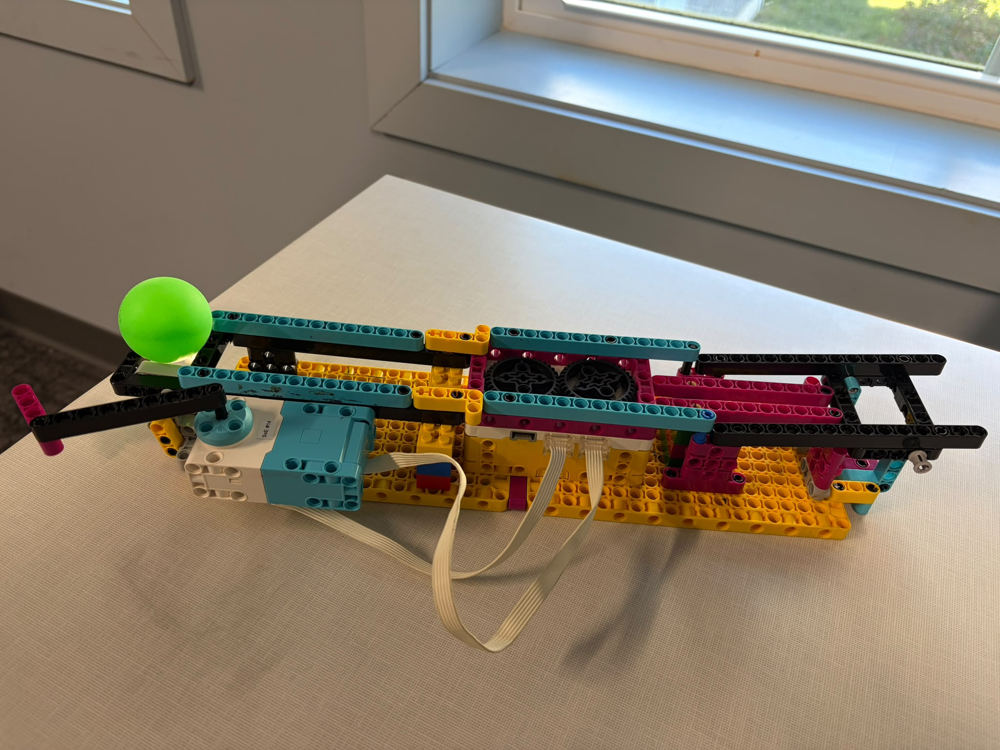

Project Portfolio

Project 9: Robotic Arm
This robotic arm project explored how a simple mechanism can move with controlled joints and a grip at the end. The goal was to design a functional arm that could lift, position, and handle a small object while learning how mechanical motion and stability work together.